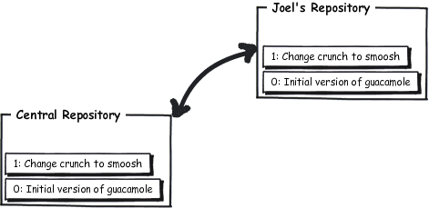
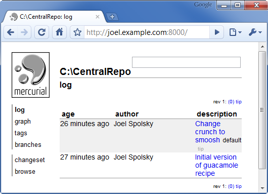

The most common way to collaborate with Mercurial is to set up a central repository, in addition to the private repositories that we each have on our own computers. We can use the central repository sort of like a swap meet, where we get together to trade the changes we’ve been making.

runs a web server to make the current repository accessible over the Internet
The quick-and-dirty way to make a central repository is to use Mercurial’s built in web server—all you have to do is make a repository with hg init and then serve it on the web with hg serve. By default it will be served on port 8000.
C:\> mkdir CentralRepo C:\> cd CentralRepo C:\CentralRepo> hg init C:\CentralRepo> hg serve
Since this computer is named joel.example.com I can just go to http://joel.example.com:8000/ with a web browser and see that the server is up and running, even though the repository there is completely empty.

make a complete copy of an entire repository
With the central web server running, I can clone this repository from the server onto my own computer for my own use. This repository is empty right now, so I’ll just get another empty repository when I clone it.
C:\Users\joel> hg clone http://joel.example.com:8000/ recipes
no changes found
updating to branch default
0 files updated, 0 files merged, 0 files removed, 0 files unresolved
C:\Users\joel> cd recipes
C:\Users\joel\recipes> dir
Volume in drive C has no label.
Volume Serial Number is 84BD-9C2C
Directory of C:\Users\joel\recipes
02/08/2010 02:46 PM <DIR> .
02/08/2010 02:46 PM <DIR> ..
02/08/2010 02:46 PM <DIR> .hg
0 File(s) 0 bytes
3 Dir(s) 41,852,125,184 bytes free
Now I’ll create a file called guac with my famous guacamole recipe.
* 1/2 red onion, minced (about 1/2 cup)
* 1-2 serrano chiles, stems and seeds removed, minced
* 2 tablespoons cilantro leaves, finely chopped
* 1 tablespoon of fresh lime or lemon juice
* 1/2 teaspoon coarse salt
* A dash of freshly grated black pepper
* 1/2 ripe tomato, seeds and pulp removed, chopped
Crunch all ingredients together.
Serve with tortilla chips.

I’ll add this file, and commit it as the first official version:
C:\Users\joel\recipes> hg add adding guac C:\Users\joel\recipes> hg commit
I’ll provide a commit comment:

I’m just going to quickly edit this file and make one small change, so that we have a little bit of history in the repository.
* A dash of freshly grated black pepper
* 1/2 ripe tomato, seeds and pulp removed, chopped
Crunch all ingredients together.
Serve with tortilla chips.

* A dash of freshly grated black pepper
* 1/2 ripe tomato, seeds and pulp removed, chopped
Smoosh all ingredients together.
Serve with tortilla chips.
And now to commit that change:
C:\Users\joel\recipes> hg status M guac C:\Users\joel\recipes> hg diff guac diff -r c1fb7e7fbe50 guac --- a/guac Mon Feb 08 14:50:08 2010 -0500 +++ b/guac Mon Feb 08 14:51:08 2010 -0500 @@ -7,5 +7,5 @@ * A dash of freshly grated black pepper * 1/2 ripe tomato, seeds and pulp removed, chopped -Crunch all ingredients together. +Smoosh all ingredients together. Serve with tortilla chips. C:\Users\joel\recipes> hg com -m "Change crunch to smoosh" C:\Users\joel\recipes> hg log changeset: 1:a52881ed530d tag: tip user: Joel Spolsky <joel@joelonsoftware.com> date: Mon Feb 08 14:51:18 2010 -0500 summary: Change crunch to smoosh changeset: 0:c1fb7e7fbe50 user: Joel Spolsky <joel@joelonsoftware.com> date: Mon Feb 08 14:50:08 2010 -0500 summary: Initial version of guacamole recipe
Notice that when I committed that time, I used the -m argument, which I haven’t done before. That’s just a way to provide the commit message on the command line, without using an editor.
OK, where are we? So far, I’ve got a central repository, and my clone of it. I’ve made two changes and committed them, but those changes are only in my clone—they’re not in the central repository yet. So the world looks like this:

push new changes from this repository into another
Now I’m going to use the hg push command, which will push my changes from my repository into the central repository:
C:\Users\joel\recipes> hg push pushing to http://joel.example.com:8000/ searching for changes ssl required
Oh great. It figures that wouldn’t work. I neglected to think about the security implications of just running a random web server and allowing anybody in the world to push their stupid changes into it. Bear with me for a moment; I’m going to configure that server to allow anybody in the world to do anything they want to it. This can be done by editing the file .hg\hgrc on the server:
push_ssl=False
allow_push=*
Needless to say, this is rather unsafe, but if you’re on a nice protected LAN at work and there’s a good firewall and you trust everybody on your LAN, this is reasonably OK. Otherwise, you’ll want to read the advanced chapters on security.
OK, time to fire up the server again:
C:\CentralRepo> hg serve
And now I should be able to push into it:
C:\Users\joel\recipes> hg push pushing to http://joel.example.com:8000/ searching for changes adding changesets adding manifests adding file changes added 2 changesets with 2 changes to 1 files
Yay! Now the world looks like this:
I know what you’re thinking. You’re thinking, “Gosh, Joel, that’s strange. Why do these repositories contain changes as opposed to files? Where’s that guac file?”
Yeah, it’s weird. But that’s the way distributed version control works. Repositories just contain big stacks of changes. Imagine that a change is like one of those clear transparency sheets. When you have a bunch of transparency sheets, you stack them on each other in order, with the latest change on the top, and look down from above, and—tada!—you’re looking at the current version of the file. As you peel away transparencies from the top of the pile, you see older and older versions.
We can use our web browser to peek into the central repository now:
Exactly what you would expect.
Now I want Rose to help me work on the recipe. Rose is on the test team. Everyone agrees that she reminds them of those middle-aged ladies you see in Vegas, sitting there slack-jawed for hours, shoveling quarter after quarter into the slot machines, only she’s testing software. You can throw her a new version of your code and she’ll test it on 23 different Linux distros, one after the other, expressionless, unmoving, pausing only to tell you that there’s a dot missing on one of the lower-case I’s in the Turkish version on Ubuntu Linux. Rose is a great tester but I swear sometimes she acts like a zombie.
C:\Users\rose> hg clone http://joel.example.com:8000/ recipes requesting all changes adding changesets adding manifests adding file changes added 2 changesets with 2 changes to 1 files updating to branch default 1 files updated, 0 files merged, 0 files removed, 0 files unresolved
Rose used the hg clone command to get her own, complete copy of the repository. hg clone takes two arguments: the URL of the repository and the name of the directory where you want it cloned. She made her own recipes folder.
C:\Users\rose> cd recipes
C:\Users\rose\recipes> dir
Volume in drive C has no label.
Volume Serial Number is 84BD-9C2C
Directory of C:\Users\rose\recipes
02/08/2010 03:23 PM <DIR> .
02/08/2010 03:23 PM <DIR> ..
02/08/2010 03:23 PM <DIR> .hg
02/08/2010 03:23 PM 394 guac
1 File(s) 394 bytes
3 Dir(s) 41,871,872,000 bytes free
C:\Users\rose\recipes> hg log
changeset: 1:a52881ed530d
tag: tip
user: Joel Spolsky <joel@joelonsoftware.com>
date: Mon Feb 08 14:51:18 2010 -0500
summary: Change crunch to smoosh
changeset: 0:c1fb7e7fbe50
user: Joel Spolsky <joel@joelonsoftware.com>
date: Mon Feb 08 14:50:08 2010 -0500
summary: Initial version of guacamole recipe
Notice that when she types hg log she sees the whole history. She has actually downloaded the entire repository, with its complete history of everything that happened.
Rose is going to make a change, and check it in:
* 1/2 red onion, minced (about 1/2 cup)
* 1-2 serrano chiles, stems and seeds removed, minced
* 2 tablespoons cilantro leaves, finely chopped
* 1 tablespoon of fresh lime or lemon juice
…
* 1/2 red onion, minced (about 1/2 cup)
* 1-2 habanero chiles, stems and seeds removed, minced
* 2 tablespoons cilantro leaves, finely chopped
* 1 tablespoon of fresh lime or lemon juice
…
Now she commits it. Notice that she can do this even if the server is not running: the commit entirely happens on her machine.
C:\Users\rose\recipes> hg diff diff -r a52881ed530d guac --- a/guac Mon Feb 08 14:51:18 2010 -0500 +++ b/guac Mon Feb 08 15:28:57 2010 -0500 @@ -1,6 +1,6 @@ * 2 ripe avocados * 1/2 red onion, minced (about 1/2 cup) -* 1-2 serrano chiles, stems and seeds removed, minced +* 1-2 habanero chiles, stems and seeds removed, minced * 2 tablespoons cilantro leaves, finely chopped * 1 tablespoon of fresh lime or lemon juice * 1/2 teaspoon coarse salt C:\Users\rose\recipes> hg com -m "spicier kind of chile" C:\Users\rose\recipes> hg log changeset: 2:689026657682 tag: tip user: Rose Hillman <rose@example.com> date: Mon Feb 08 15:29:09 2010 -0500 summary: spicier kind of chile changeset: 1:a52881ed530d user: Joel Spolsky <joel@joelonsoftware.com> date: Mon Feb 08 14:51:18 2010 -0500 summary: Change crunch to smoosh changeset: 0:c1fb7e7fbe50 user: Joel Spolsky <joel@joelonsoftware.com> date: Mon Feb 08 14:50:08 2010 -0500 summary: Initial version of guacamole recipe
While Rose was making her change, I can make a change at the same time.
* 1/2 ripe tomato, seeds and pulp removed, chopped
Smoosh all ingredients together.
Serve with tortilla chips.
* 1/2 ripe tomato, seeds and pulp removed, chopped
Smoosh all ingredients together.
Serve with potato chips.
After I check that in, you’ll see that my log shows something different as changeset #2 than Rose’s log.
C:\Users\joel\recipes> hg com -m "potato chips. No one can eat just one." C:\Users\joel\recipes> hg log changeset: 2:4ecdb2401ab4 tag: tip user: Joel Spolsky <joel@joelonsoftware.com> date: Mon Feb 08 15:32:01 2010 -0500 summary: potato chips. No one can eat just one. changeset: 1:a52881ed530d user: Joel Spolsky <joel@joelonsoftware.com> date: Mon Feb 08 14:51:18 2010 -0500 summary: Change crunch to smoosh changeset: 0:c1fb7e7fbe50 user: Joel Spolsky <joel@joelonsoftware.com> date: Mon Feb 08 14:50:08 2010 -0500 summary: Initial version of guacamole recipe
Our histories are starting to diverge.

Don’t worry… in a minute we’ll see how to bring these diverging changes back together into one delicious habanero-based potato chip dip.
list changes in current repository waiting to be pushed
Rose can continue to work, disconnected, making as many changes as she wants, and either committing them, or reverting them, in her own repository. At some point, though, she’s going to want to share all the changes she’s been committing with the outside world. She can type hg outgoing which will show a list of changes that are waiting to be sent up to the central repository. These are the changes that hg push would send, if she were to hg push.
C:\Users\rose\recipes> hg outgoing comparing with http://joel.example.com:8000/ searching for changes changeset: 2:689026657682 tag: tip user: Rose Hillman <rose@example.com> date: Mon Feb 08 15:29:09 2010 -0500 summary: spicier kind of chile
Think of hg outgoing like this: it simply lists any changes in the current repository that aren’t in the central repository.
OK, so Rose pushes her changes.
C:\Users\rose\recipes> hg push pushing to http://joel.example.com:8000/ searching for changes adding changesets adding manifests adding file changes added 1 changesets with 1 changes to 1 files
And the world looks like this:
When I get back from my fourth latte break of the day, I’m ready to push my potato-chip change, too.
C:\Users\joel\recipes> hg outgoing comparing with http://joel.example.com:8000/ searching for changes changeset: 2:4ecdb2401ab4 tag: tip user: Joel Spolsky <joel@joelonsoftware.com> date: Mon Feb 08 15:32:01 2010 -0500 summary: potato chips. No one can eat just one. C:\Users\joel\recipes> hg push pushing to http://joel.example.com:8000/ searching for changes abort: push creates new remote heads! (did you forget to merge? use push -f to force)
Ahhh!! Failure! By the way… that message you see there? The one that says use push -f to force? That’s terrible advice. Never, ever, EVER use push -f to force. You will regret it. Trust me for now.
The reason Rose’s push succeeded while mine failed is because potato chips do not go well with guacamole. Just kidding! I wanted to see if you were awake, there.
The push failed because we both made changes, and so they need to be merged somehow, and Mercurial knows it.
The first thing I’m going to do is get all those changes that are in the central repository that I don’t have yet, so I can merge them.
C:\Users\joel\recipes> hg incoming comparing with http://joel.example.com:8000/ searching for changes changeset: 3:689026657682 tag: tip parent: 1:a52881ed530d user: Rose Hillman <rose@example.com> date: Mon Feb 08 15:29:09 2010 -0500 summary: spicier kind of chile C:\Users\joel\recipes> hg pull pulling from http://joel.example.com:8000/ searching for changes adding changesets adding manifests adding file changes added 1 changesets with 1 changes to 1 files (+1 heads) (run 'hg heads' to see heads, 'hg merge' to merge)
There’s some gibberish there about +1 heads. That’s because my repository, which used to just have three changes neatly stacked, is now a two-headed monster, with two different changes stacked precariously on top like this:
I’ve got both versions in my repository now… I’ve got my version:
C:\Users\joel\recipes> type guac * 2 ripe avocados * 1/2 red onion, minced (about 1/2 cup) * 1-2 serrano chiles, stems and seeds removed, minced * 2 tablespoons cilantro leaves, finely chopped * 1 tablespoon of fresh lime or lemon juice * 1/2 teaspoon coarse salt * A dash of freshly grated black pepper * 1/2 ripe tomato, seeds and pulp removed, chopped Smoosh all ingredients together. Serve with potato chips.
And I’ve got Rose’s version:
C:\Users\joel\recipes> hg cat -r 3 guac * 2 ripe avocados * 1/2 red onion, minced (about 1/2 cup) * 1-2 habanero chiles, stems and seeds removed, minced * 2 tablespoons cilantro leaves, finely chopped * 1 tablespoon of fresh lime or lemon juice * 1/2 teaspoon coarse salt * A dash of freshly grated black pepper * 1/2 ripe tomato, seeds and pulp removed, chopped Smoosh all ingredients together. Serve with tortilla chips.
And it’s up to me to merge them. Luckily, this is easy.
C:\Users\joel\recipes> hg merge merging guac 0 files updated, 1 files merged, 0 files removed, 0 files unresolved (branch merge, don't forget to commit) C:\Users\joel\recipes> type guac * 2 ripe avocados * 1/2 red onion, minced (about 1/2 cup) * 1-2 habanero chiles, stems and seeds removed, minced * 2 tablespoons cilantro leaves, finely chopped * 1 tablespoon of fresh lime or lemon juice * 1/2 teaspoon coarse salt * A dash of freshly grated black pepper * 1/2 ripe tomato, seeds and pulp removed, chopped Smoosh all ingredients together. Serve with potato chips.
Look! The hg merge command took my two heads and combined them together. In this case, since we both edited different parts of the file, there was no conflict at all and the merge went off without a hitch.
merge two heads
I still have to commit. This is important. If the merge failed, I could always revert and try again. Since the merge was successful, I’m going to commit it. Then I’ll be able to push my changes to the central repository.
C:\Users\joel\recipes> hg commit -m "merge" C:\Users\joel\recipes> hg log changeset: 4:0849ca96c304 tag: tip parent: 2:4ecdb2401ab4 parent: 3:689026657682 user: Joel Spolsky <joel@joelonsoftware.com> date: Mon Feb 08 16:07:23 2010 -0500 summary: merge changeset: 3:689026657682 parent: 1:a52881ed530d user: Rose Hillman <rose@example.com> date: Mon Feb 08 15:29:09 2010 -0500 summary: spicier kind of chile changeset: 2:4ecdb2401ab4 user: Joel Spolsky <joel@joelonsoftware.com> date: Mon Feb 08 15:32:01 2010 -0500 summary: potato chips. No one can eat just one. changeset: 1:a52881ed530d user: Joel Spolsky <joel@joelonsoftware.com> date: Mon Feb 08 14:51:18 2010 -0500 summary: Change crunch to smoosh changeset: 0:c1fb7e7fbe50 user: Joel Spolsky <joel@joelonsoftware.com> date: Mon Feb 08 14:50:08 2010 -0500 summary: Initial version of guacamole recipe C:\Users\joel\recipes> hg out comparing with http://joel.example.com:8000/ searching for changes changeset: 2:4ecdb2401ab4 user: Joel Spolsky <joel@joelonsoftware.com> date: Mon Feb 08 15:32:01 2010 -0500 summary: potato chips. No one can eat just one. changeset: 4:0849ca96c304 tag: tip parent: 2:4ecdb2401ab4 parent: 3:689026657682 user: Joel Spolsky <joel@joelonsoftware.com> date: Mon Feb 08 16:07:23 2010 -0500 summary: merge C:\Users\joel\recipes> hg push pushing to http://joel.example.com:8000/ searching for changes adding changesets adding manifests adding file changes added 2 changesets with 2 changes to 1 files
And now the central repository has the same thing as I do:

OK, I have Rose’s changes, and my changes, but Rose doesn’t have my changes yet.
One thing I forgot to tell you about Rose. She’s a doctor. Yep. A medical doctor. Isn’t that weird? She was a hotshot pediatrician at Mt. Sinai, probably earning five times as much as this crappy joint pays its testers. Nobody really knows why she left the field of medicine. The other testers think something tragic happened. She had a family, once, too; there’s a picture of a cute ten year old on her desk, but now she lives alone, and we don’t want to pry.
Rose needs to pull the latest, incoming stuff from the repository to get it.
C:\Users\rose\recipes> hg pull pulling from http://joel.example.com:8000/ searching for changes adding changesets adding manifests adding file changes added 2 changesets with 2 changes to 1 files (run 'hg update' to get a working copy)
Got it. Now, you may find this a bit odd, but even though Rose pulled those new changes into her repository, they’re not in her working directory yet.
C:\Users\rose\recipes> type guac * 2 ripe avocados * 1/2 red onion, minced (about 1/2 cup) * 1-2 habanero chiles, stems and seeds removed, minced * 2 tablespoons cilantro leaves, finely chopped * 1 tablespoon of fresh lime or lemon juice * 1/2 teaspoon coarse salt * A dash of freshly grated black pepper * 1/2 ripe tomato, seeds and pulp removed, chopped Smoosh all ingredients together. Serve with tortilla chips.
See that? She’s still working with Tortilla chips. Tortilla chips!
She does have my new changes somewhere in her repository…
C:\Users\rose\recipes> hg log changeset: 4:0849ca96c304 tag: tip parent: 3:4ecdb2401ab4 parent: 2:689026657682 user: Joel Spolsky <joel@joelonsoftware.com> date: Mon Feb 08 16:07:23 2010 -0500 summary: merge changeset: 3:4ecdb2401ab4 parent: 1:a52881ed530d user: Joel Spolsky <joel@joelonsoftware.com> date: Mon Feb 08 15:32:01 2010 -0500 summary: potato chips. No one can eat just one. changeset: 2:689026657682 user: Rose Hillman <rose@example.com> date: Mon Feb 08 15:29:09 2010 -0500 summary: spicier kind of chile changeset: 1:a52881ed530d user: Joel Spolsky <joel@joelonsoftware.com> date: Mon Feb 08 14:51:18 2010 -0500 summary: Change crunch to smoosh changeset: 0:c1fb7e7fbe50 user: Joel Spolsky <joel@joelonsoftware.com> date: Mon Feb 08 14:50:08 2010 -0500 summary: Initial version of guacamole recipe
show the changeset that’s in the working directory
They’re just not in her working directory. That’s because she’s still working off of changeset #2. You can see this with the “parent” command:
C:\Users\rose\recipes> hg parent changeset: 2:689026657682 user: Rose Hillman <rose@example.com> date: Mon Feb 08 15:29:09 2010 -0500 summary: spicier kind of chile
Mercurial is being nice to us. It’s always safe to pull; all it does is get us the latest changes that other people have been making. We can switch to working with them later, at our own convenience.
Remember that the hg up command with no arguments will change the working directory to the tip (the absolute TOP changeset), in this case number 4:
C:\Users\rose\recipes> hg up 1 files updated, 0 files merged, 0 files removed, 0 files unresolved C:\Users\rose\recipes> type guac * 2 ripe avocados * 1/2 red onion, minced (about 1/2 cup) * 1-2 habanero chiles, stems and seeds removed, minced * 2 tablespoons cilantro leaves, finely chopped * 1 tablespoon of fresh lime or lemon juice * 1/2 teaspoon coarse salt * A dash of freshly grated black pepper * 1/2 ripe tomato, seeds and pulp removed, chopped Smoosh all ingredients together. Serve with potato chips.
And now, she’s looking at the latest version with everybody’s changes.
When you’re working on a team, your workflow is going to look a lot like this:
- If you haven’t done so in a while, get the latest version that everyone else is working off of:
- hg pull
- hg up
- Make some changes
- Commit them (locally)
- Repeat steps 2-3 until you’ve got some nice code that you’re willing to inflict on everyone else
- When you’re ready to share:
- hg pull to get everyone else’s changes (if there are any)
- hg merge to merge them into yours
- test! to make sure the merge didn’t screw anything up
- hg commit (the merge)
- hg push
Test yourself
Here are the things you should know how to do after reading this tutorial:
- Set up a central repository and let team members clone off of it
- Push changes into the central repository
- Pull changes from the central repository
- Merge changes from different contributors
• A complete version control system based on Mercurial and Git
• Branching and merging that really works
• Secure hosting on our servers
• Seamlessly integrated code review
Looking for more?
Fog Creek offers free monthly webinars that go over the basics of Mercurial. Sign up at fogcreek.com.
Any questions?
Looking for help with Kiln? Check out the Kiln Knowledge Base.
About the author.
Joel Spolsky is the founder of Fog Creek Software, a New York company that proves that you can treat programmers well and still be profitable. Programmers get private offices, free lunch, and work 40 hours a week. Customers only pay for software if they’re delighted. Fog Creek makes FogBugz, Kiln, and Fog Creek Copilot. Joel's blog Joel on Software is read by programmers everywhere.